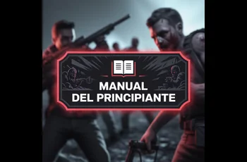
Beginner's Guide
Strategies, buildings and exclusive resources for each season
Learn key strategies to dominate Last Z: Survival Shooter
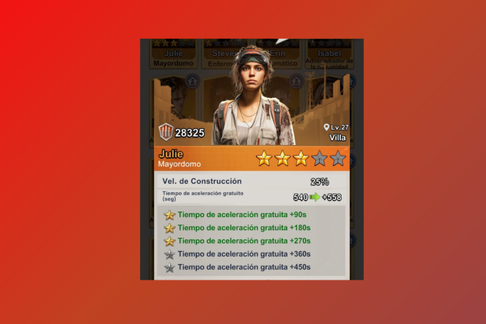
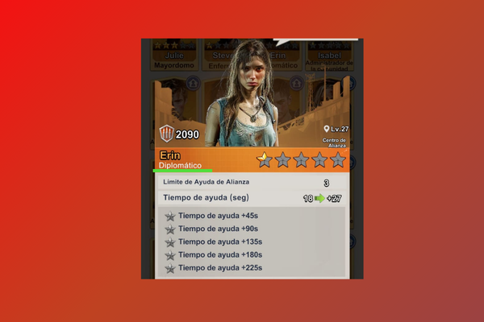
Los refugiados Mayordomo y Diplomático son los más valiosos del juego. Prioriza conseguirlos para acelerar tu progresión enormemente.
Read more →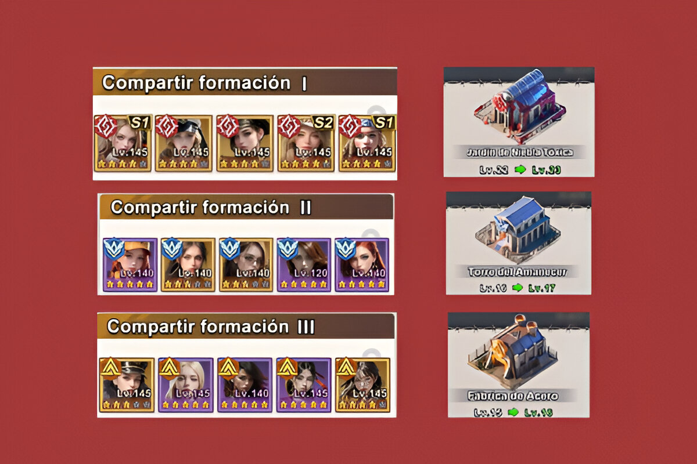
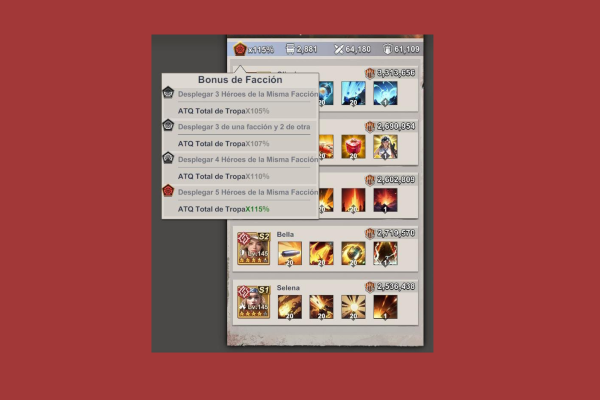
Alinea 5 héroes de la misma facción en cada tropa para obtener ATQ +115%. Prioriza Rosa Sangrienta en tu primera formación.
Read more →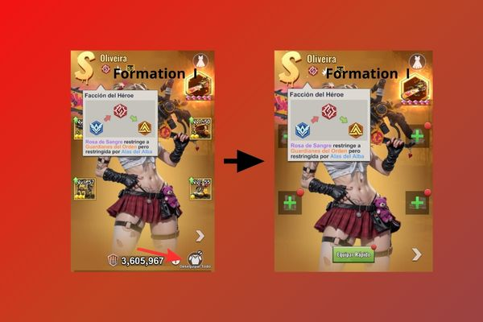
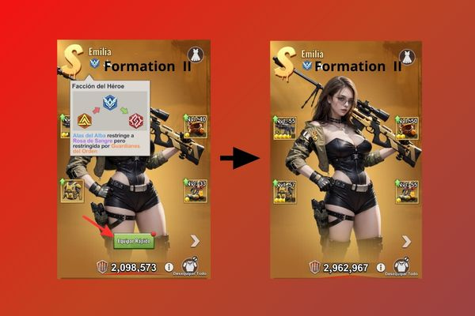
Transfiere tus mejores armaduras entre formaciones para maximizar rondas en Caravana. Pasa equipamiento de Rosa → Alba → Guardián según avances.
Read more →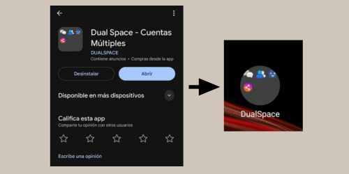
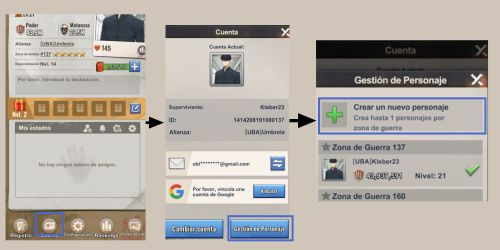
Las cuentas farm te permiten generar recursos extra y enviarlos a tu cuenta principal. Aprende dos métodos para crearlas en tu mismo servidor.
Read more →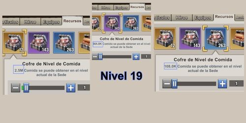
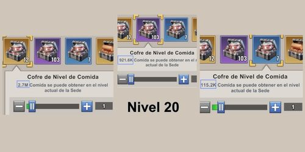
Las cajas de recursos aumentan su valor según tu nivel de Sede. Guarda las cajas doradas y úsalas después del nivel 27+ para obtener más recursos.
Read more →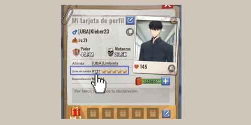
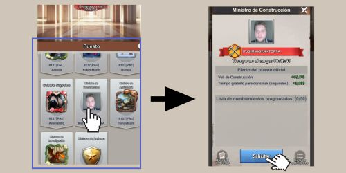
¿Sabías que puedes solicitar un puesto de gobierno en tu servidor y recibir buffs de ataque, construcción o recursos? Solo necesitas cumplir los requisitos y saber dónde pedirlo.
Read more →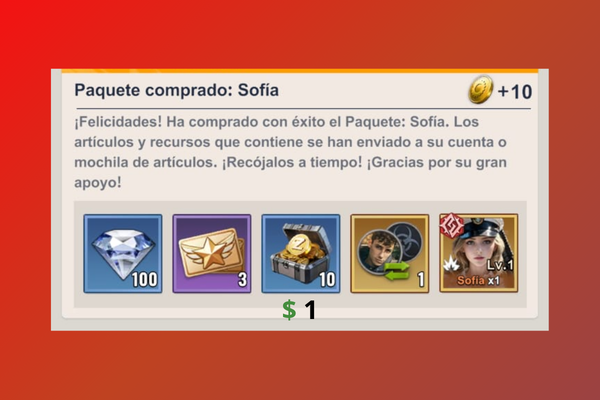
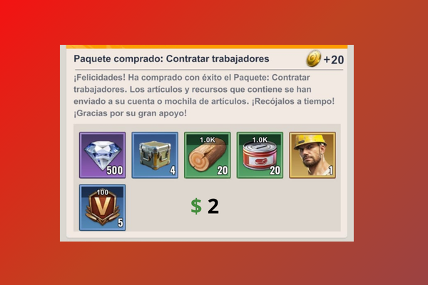
Si vas a gastar dinero, prioriza Sophia ($1) por su habilidad de construcción y el 2º Constructor ($2) para acelerar tu progreso al inicio.
Read more →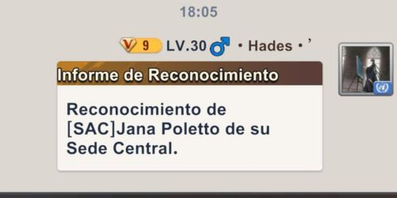
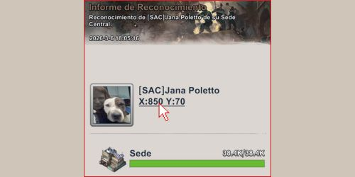
Cuando recibes o ves un informe de reconocimiento compartido, haz click en las coordenadas debajo del nombre del jugador para ir directamente a su ubicación en el mapa.
Read more →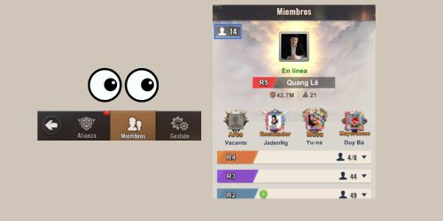
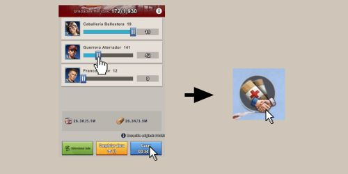
En vez de curar todas tus tropas heridas de golpe, cura en pequeños lotes según cuántos miembros activos hay en tu alianza. Ahorrarás tiempo y aceleradores.
Read more →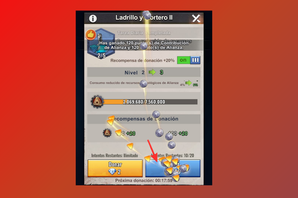
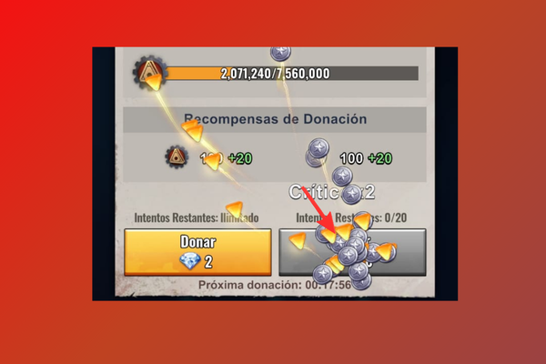
En vez de hacer click repetidamente para donar, mantén presionado el botón. Esto activa multiplicadores (x2, x5, x10) para donar más rápido y obtener más puntos.
Read more →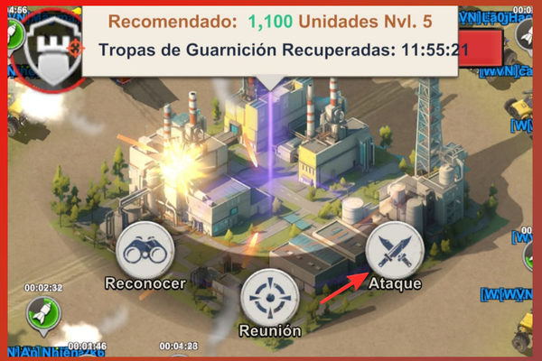
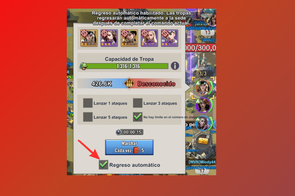
Antes de atacar, activa el casillero "Regreso automático". Así tus tropas regresarán solas después del combate sin tener que hacerlo manualmente.
Read more →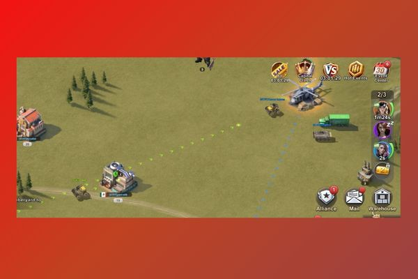
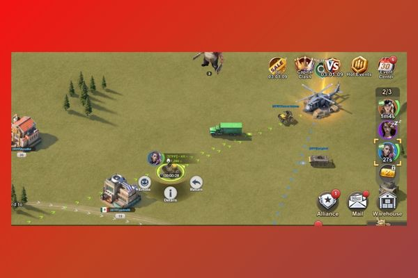
Si hay un tesoro de tu alianza lejos, puedes llegar más rápido reforzando ciudades o bases aliadas. Esta velocidad de refuerzo solo funciona dentro de tu territorio de alianza.
Read more →